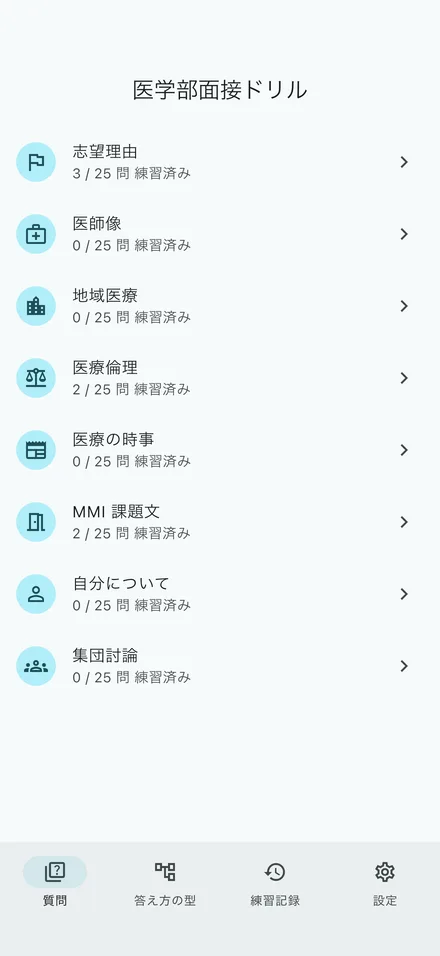
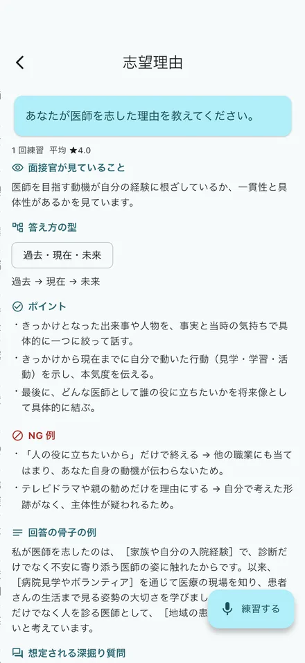
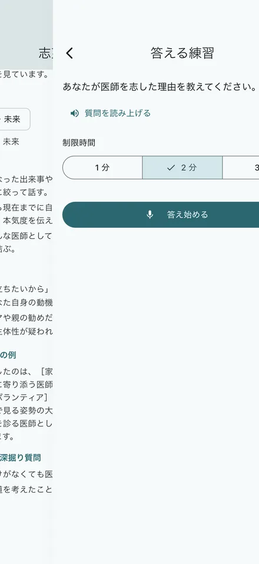

Med School Interview Prep
医学部面接ドリル質問200問と答え方の型で面接練習｜iPhone・iPad・Android アプリ
「医学部面接ドリル」は、医学部の面接に向けて、よく聞かれる質問を声に出して練習するアプリです。8分野200問の質問と、10種類の「答え方の型」を収録しています。
近日公開（App Store 審査中）
ブラウザで使う（Web 版）
状態: 近日公開（審査中） ／ 対応: iPhone・iPad・Android ／ 価格: 無料（広告あり・アプリ内課金あり） ／ 提供: 株式会社St.Arkid
こんな人におすすめ
- 医学部の面接・MMIを控えた受験生
- 声に出して答える練習をしたい人
- 答えの組み立て方を身につけたい人
主な特徴
8分野・200問
志望理由・医師像・地域医療・医療倫理・時事・MMI・自分について・集団討論、各25問。
質問カード
質問の意図・答え方の型・押さえたい点・NG例・回答の骨組み・深掘りの質問をまとめています。
声に出して練習
質問を読み上げで聞き、1〜3分で回答。端末内で録音して聞き返し、5段階で自己評価。
答え方の型 10種類
PREP・STARなど、答えを組み立てる型を例つきで解説します。
練習記録
練習した質問・時間・自己評価・録音を一覧で見返せます。
スクリーンショット



よくある質問
料金はかかりますか？
無料です。広告表示に Google AdMob を使っています。買い切りの「広告を消す」を購入すると広告が出なくなります。
録音はどこに保存されますか？
端末の中だけに保存し、外部には送信しません。マイクは練習で録音するときだけ使います。
特定の大学の過去の質問ですか？
いいえ。質問と解説はすべてオリジナルで、大学・予備校とは関係のない非公式アプリです。
サポート
使い方や不具合のご連絡は、サポートページをご覧ください。
St.Arkid のほかのアプリ
大喜利IPPON!みんなのスマホで大喜利を審査
てもとCRMノーコードで作る、手元の顧客管理
コメミ機内でもコメントと一緒に動画を
歩いてドパガキ歩いた分だけスマホが使えるアプリ制限
整備士3級 合格ドリル三級自動車整備士（総合）の学科対策
広告を見ないと止まらない目覚まし動画を1本見るまで鳴り続ける二度寝防止アラーム
集中。気が散るアプリをブロックして集中
共テカウント共通テストまでの残り日数と勉強法
医療英単語医療系の英単語を効率よく学ぶ
WORaDi単語帳 × AI
オフライン英語機内でも使える端末内AIの英会話
板書ノート授業ごとに自動でノート整理・Face ID保護
サシ麻雀CPU と 1 対 1 の 2 人麻雀
インターバル。筋トレ・HIIT・タバタ用タイマー
ねむりミックス睡眠音を重ねて、やさしく起きる
普通免許 学科ドリル仮免・本免の学科を○×で対策
危険物乙4 合格ドリル乙4の3科目155問を演習・模試
漢字ドリル級別4択で毎日練習できる漢字ドリル
FP3級 合格ドリル3級FP学科を一問一答と模試で対策
宅建 一問一答ドリル○×で覚える宅建士の試験対策
登録販売者 試験ドリル登録販売者試験の対策・模試・復習
クルマ通検定車好きのための7ジャンル318問クイズ
イントロQ出だし数秒で当てる早押し音楽クイズ
ダイホン台本を読み上げて台詞を覚える
勉強してドパガキ勉強するまでSNSも動画も開けない
待った。衝動買いを冷却期間で防ぐ
ひと呼吸。衝動を波のようにやり過ごす
PlateLog撮るだけでカロリーとPFCを推定
医学 暗記ドリル解剖学・生理学の4択一問一答
看護師国試 一問一答ドリル看護師国試を4択の一問一答で
英単語ドリル英単語を4択で覚える。復習つき
都道府県・国旗クイズ県庁所在地・名産・国旗・首都を4択で
九九・計算ドリル小学1〜3年の九九・たし算・ひき算
歴史の年号 語呂合わせ日本史・世界史の年号を語呂で暗記
介護福祉士 国試ドリルパート合格対応・5択698問と模試
医療事務ドリルレセプト・点数計算の練習問題
ITパスポート ドリルiパス600問・本番形式の模試
秘書検定ドリル 2級・3級5択632問と模試・敬語や席次の図つき
難読漢字と四字熟語大人の漢字クイズ・読みと意味
何切る道場麻雀の何切る問題・牌効率ドリル
ことわざキッズ小学生のことわざ・慣用句クイズ
共テスコアノート共通テスト模試の点数記録とボーダー比較
小論文れんしゅう帳お題150・字数カウント・原稿用紙
1本まって吸いたい時にひと息・本数を記録